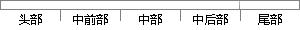

其中时间间隔取值为10、30、60、120，α取值为0、0.
片段位置图

相似结果|
相似片段 1：、20）和最大值（95、0、68），确定色卡 Lab起始值（30、- 60、20）和终止值（90、0、80），颜色总数 216 000种。按间隔 5、10、20取值，其颜色总数分别为2 197、343
相似片段 2：样本数半径的取值原始预测0 20 40 60 80 100 120 1404567891011训练集介电常数样本数介电常数的取值原始预测图4.3 （a） 图4.3 （b）0 10 20 30 40
|
※ 片段修改建议 ※
近似词参考：- 其中：此中 个中
- 时间：时候
- 间隔：距离 隔断
系统自动生成语句：此中时候距离取值为10、30、60、120，α取值为0、0.
注：本片段修改建议为系统自动生成，仅供参考。